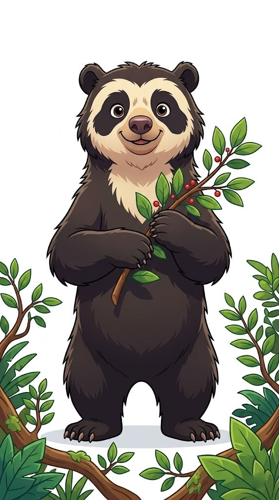

🚀 Comenzar Aventura
Cotapata: Guía
☰
×
🌐 Cambiar a Inglés (EN)
🎒 Guía de Ruta
👥 Nuestro Equipo
🐾 Fauna
🌿 Flora
✨ Todas
🦊 Mamíferos
🐦 Aves
🐭 Roedores
×
Nombre
Científico
🔊 Escuchar Guía
■
🐾 Sonido Real
■
×
Título